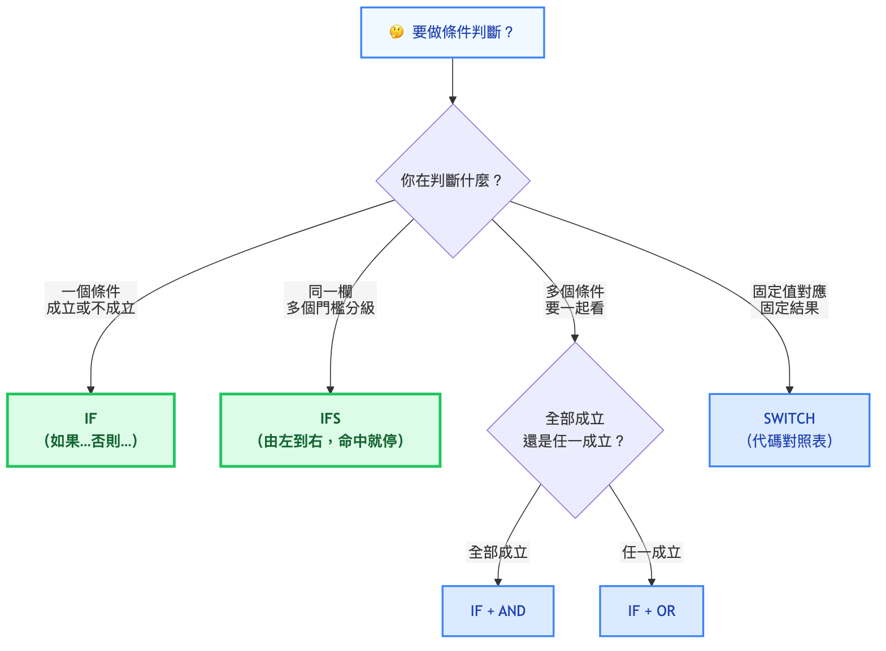
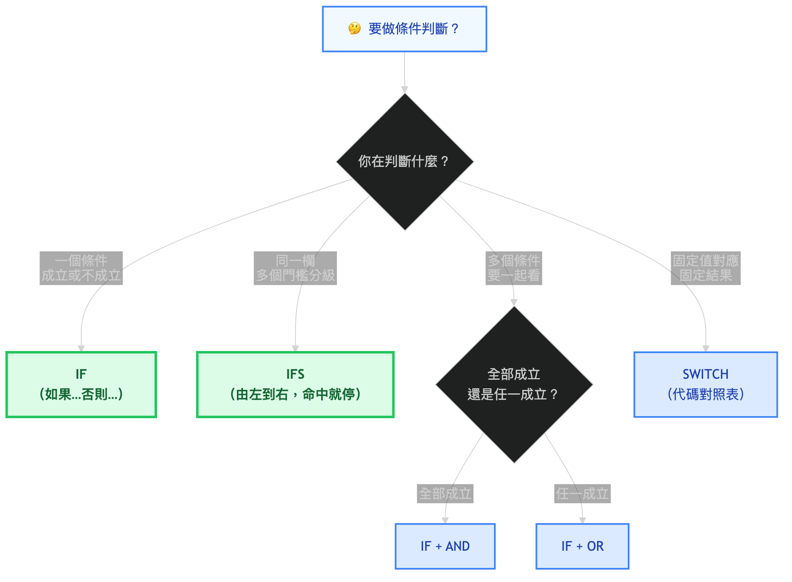

從這課開始，Excel 不只是算數字，而是會根據條件給出不同結果。先分清楚你要判斷的是一件事、多個門檻、多個條件，還是固定值對應。
先分 4 種判斷
| 你想判斷什麼 | 用哪個函數 | 一句提醒 |
|---|---|---|
| 一個條件成立或不成立 | IF | 最基本的「如果...否則...」 |
| 同一欄有多個門檻 | IFS | 由左到右檢查，一命中就停止 |
| 多個條件要一起看 | AND / OR | AND 是全部成立；OR 是任一成立 |
| 固定值對應固定結果 | SWITCH | 部門代碼、狀態代碼、月份代碼這類很適合 |
怎麼選：一張決策樹


語法起手式
# 單一條件：成績及格判斷
=IF(B2>=60, "及格", "不及格")
# 多個門檻：績效等第
=IFS(B2>=90, "A", B2>=80, "B", B2>=70, "C", TRUE, "F")
# 複合條件：AND / OR 通常包在 IF 裡
=IF(AND(B2>=60, C2>=60), "兩科都過", "補考")
=IF(OR(D2="VIP", E2>10000), "享折扣", "原價")
# 固定值對應：用 SWITCH 取代一串等於判斷
=SWITCH(B2, "業務", "Sales", "財務", "Finance", "資訊", "IT", "其他")3 個最容易搞混的地方
IF 不是拿來做整張報表彙總
IF 適合判斷每一列該顯示什麼結果。若你想問「業務部總業績是多少」，那是下一課的 SUMIFS / COUNTIFS 場景。
IFS 會由左到右，一命中就停止
門檻要由高到低寫。若你先寫 B2>=70，再寫 B2>=90，90 分也會先被判成 C，後面的 A 永遠輪不到。
SWITCH 適合值對應，不適合範圍門檻
如果是「部門=業務 → Sales」這種固定對照，用 SWITCH 很乾淨；如果是「分數大於 90」這種範圍判斷，用 IFS 比較自然。
實戰範例：同一張員工表練熟的判斷
# D欄=績效分數，E欄=出勤天數，B欄=部門
=IF(D2>=80, "優良", "待改善")
=IFS(D2>=90, "A", D2>=75, "B", TRUE, "C")
=IF(AND(E2>=22, D2>=80), "模範", "一般")
=IF(OR(B2="業務", D2>=90), "重點關注", "一般")
=SWITCH(B2, "業務", "Sales", "財務", "Finance", "資訊", "IT", "其他")
WPS Office
IF / IFS / AND / OR / SWITCH 相容性
- IF、IFS、AND、OR 語法與 Excel 完全相同，可直接複製使用
- IFS 在 WPS 2019 以後支援；舊版請改用巢狀 IF
- SWITCH 在 WPS 2022 以後支援